The Antinori Family
Discover the legacy of Antinori, where tradition meets innovation in every bottle. For over six centuries.
26 GENERAZIONI

Infinite
Affinity
The Antinori family has been dedicated to the
art of winemaking, crafting exceptional
wines that embody the spirit of Italy.
INTRO
A wine journey that starts
from the generous Veneto
region to conquer palates around the world. dlkfj
Let's erase the fadness of your life with the wines we have
Whether you're a connoisseur or a casual enthusiast, you'll find a wine that speaks to your palate and tells a story of its origin.
Antinori, one of the oldest and most esteemed wine producers in Italy, has been crafting exceptional wines for over six centuries. Renowned for their innovation, quality, and respect for tradition, Antinori offers a diverse portfolio of wines that capture the essence of Italian viticulture. Here's a glimpse into some of their notable wines:
Our vineyards span the most prestigious wine regions, from the rolling hills of Tuscany to the sun-kissed valleys of Umbria, each terroir imparting unique character and depth to our wines.
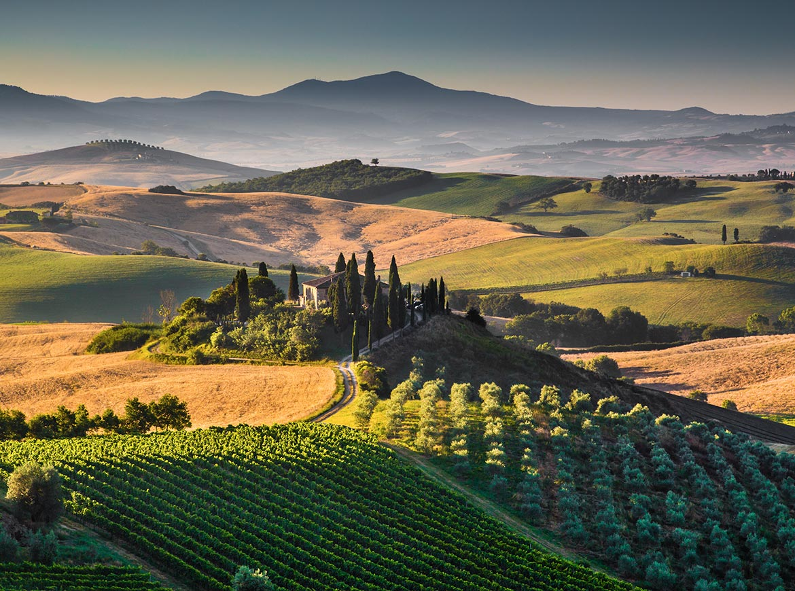
At Antinori, we cherish the diverse
terroirs of Italy, including the enchanting
region of Umbria. Nestled in the heart of central Italy,
Umbria captivates with its rolling hills and
historic towns, makingit an ideal
environment for producing exceptional wines

The success of this line of wines is the result of a
unique terroir, which combines the natural
characteristics of the land with an ancient
winemaking process that involves the
appassimento technique of grapes and a gentle
maceration.

INTRO
At Antinori, we believe that wine is more than a beverage;
it's an experience. Our commitment to quality and passion for
excellence are reflected in our diverse portfolio,
showcasing both time-honored classics and modern masterpieces.
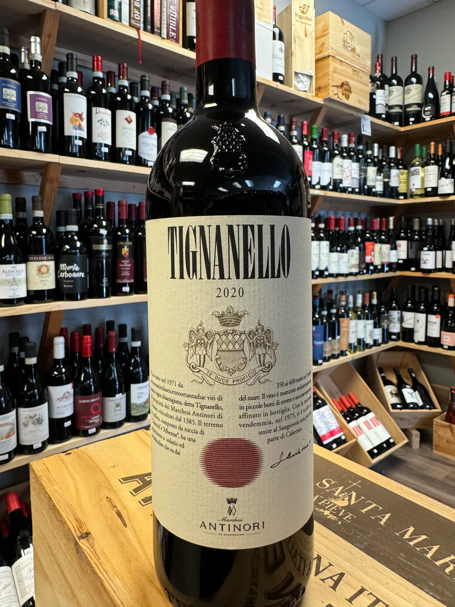
Tignanillo
DISCOVER

Peppoli Chianti Classico
DISCOVER

Marchese Antinori
DISCOVER
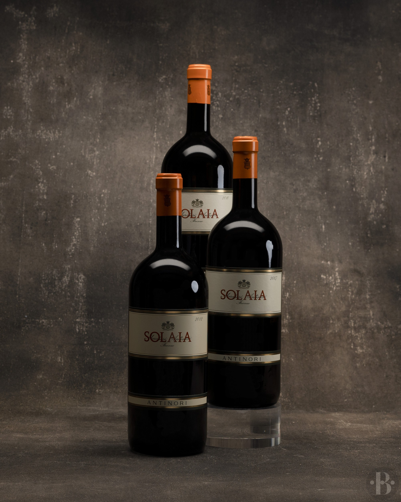
Solaia
DISCOVER

Guado al Tasso
DISCOVER
Wine production in Umbria dates back to ancient Roman times. The region is known for producing a variety of wines, including the famous Sagrantino di Montefalco, a robust red wine with deep historical roots.
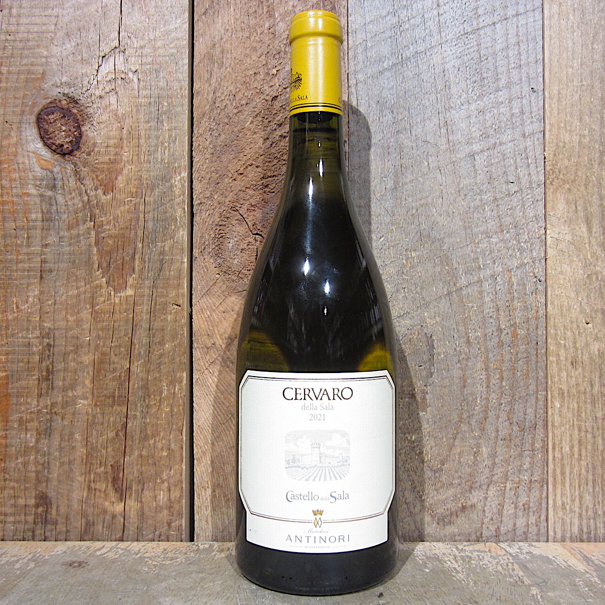
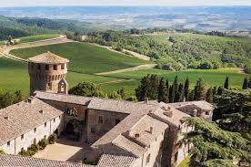
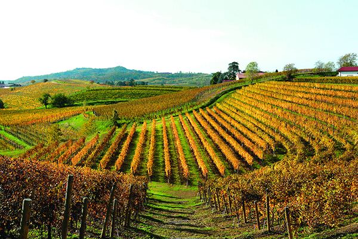
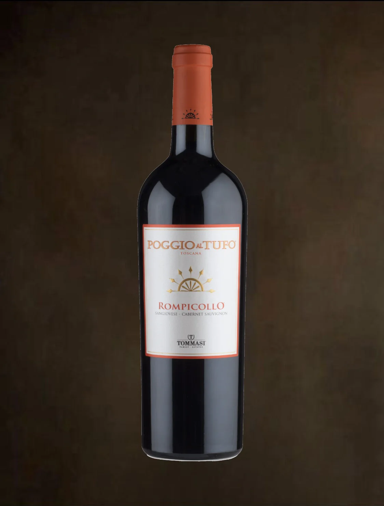
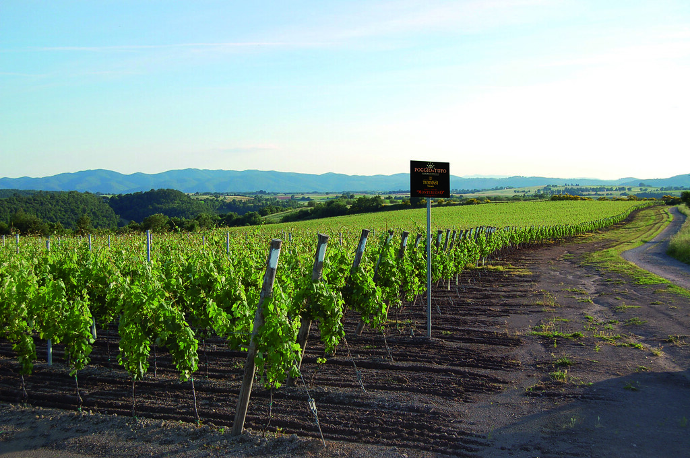
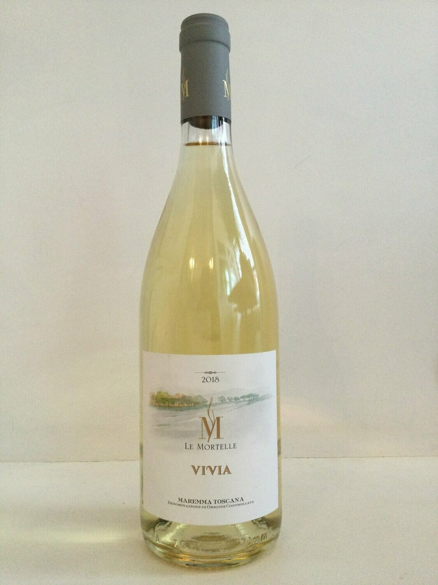
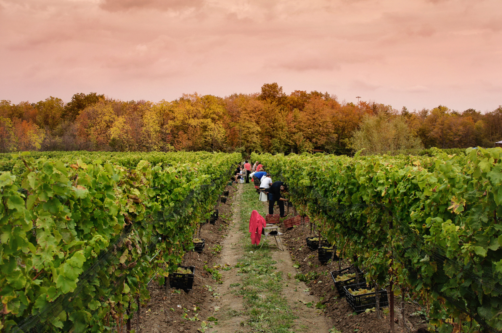
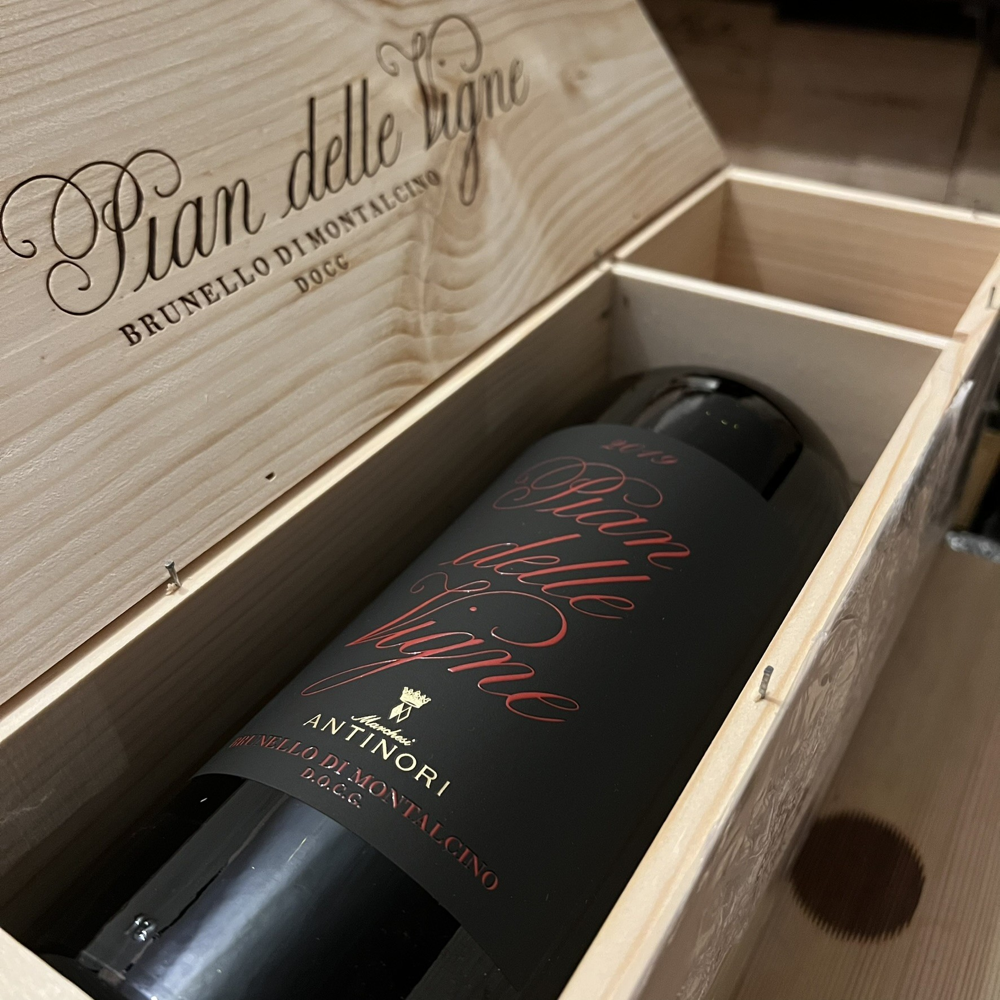

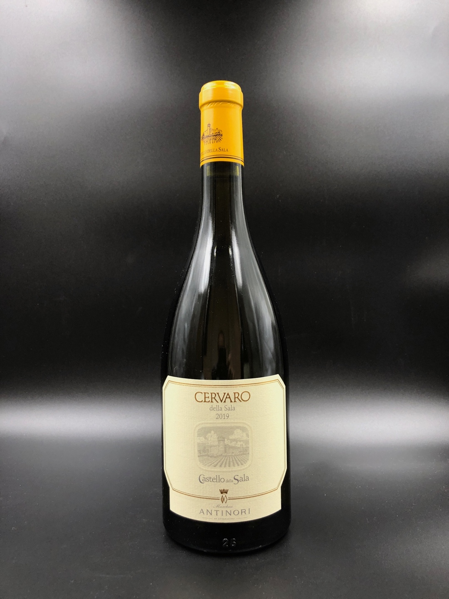